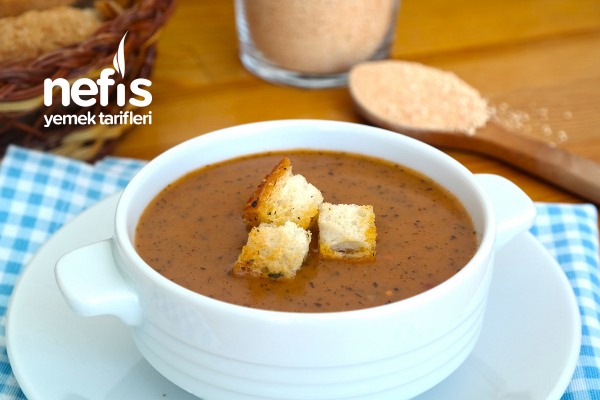

tarhana çorbası
İÇİNDEKİLER
- 3 yemek kaşığı ev tarhanası
- 1 yemek kaşığı nane
- 2 yemek kaşığı sıvı yağ
- 1 yemek kaşığı salça
- 6 su bardağı su
- Kırmızı pul biber
- Karabiber
- Tuz
YAPILIŞ
- Tenceremizin içerisine sıvı yağ, nane, salça, baharatlar ve tarhanayı ekleyip biraz karıştırarak kavuruyoruz. Dilerseniz tereyağı da kullanabilirsiniz.( Veya tarhanayı suyu ekledikten sonra ekleyip çırpıcı ile karıştırabilirsiniz. böylelikle topaklanma ihtimali azalır.)
- Suyu yavaş yavaş ilave ediyoruz ve devamlı karıştırarak pişiriyoruz. Topaklanmaması için tel çırpıcı ile karıştırabilirsiniz. (kaynayana kadar karıştırarak pişirelim.)
- Kaynadıktan sonra 5 dk daha bekleyip ocaktan alıyoruz, çorbamızı…
